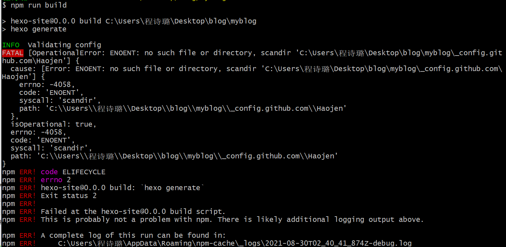
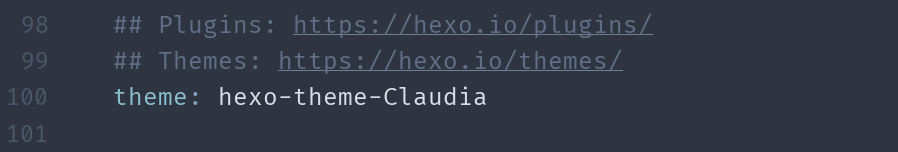
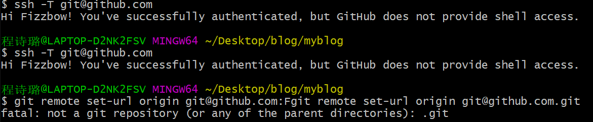
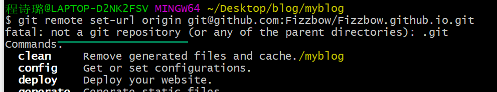
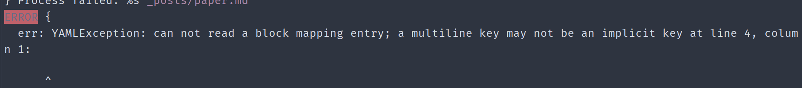
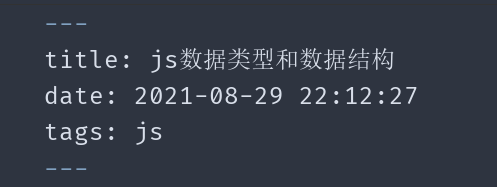

从零开始搭建hexo到安装theme主题这段比较顺利，到安装主题之后开始出现错误
1. Error:no such file or directory,scandir ‘….’
加入主题之后运行所有hexo命令都会报如下错误

排查之后，blog主题这一栏填成了别人主题的theme地址，直接写上theme主题名字就行了

接着除了hexo-d其他命令都能运行
2.spawn failed
用hexo-d更新的时候报错 spawn failed
检查了自己的github ssh地址 显示：but Github does not provide shell access
更改myblog目录下的config.yml的repo

3.not a git repository (or any of the parent directories): .git
暂时不太清楚这个的报错原因，可能是当时服务器的问题，第二天登了之后就好了

4.can not read a block mapping entry ;a multiline key may not be an implicit key …..
上传paper.md的时候报错

因为paper.md标题中的语法不是很规范，冒号后面没有加空格，及config.yml中的语法也该如此
正确书写应该是tags： js
